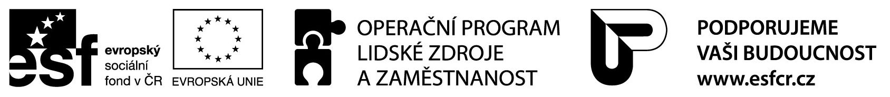

<div id="zamest" class="container margin">
  <div class="container">
    <p>
    V listopadu 2013 jsem přes Úřad práce, který vyhlásil projekt <strong>Odborné praxe 

      pro mladé do 30 let ve Zlínském kraji</strong>, zaměstnala uchazečku o zaměstnání. Tento projekt je financován 
    z 85 % z prostředků Evropského sociálního fondu prostřednictvím Operačního 
    programu Lidské zdroje a zaměstnanost a z 15 % z prostředků státního rozpočtu ČR.
    </p> 
    <div class="col-lg-6 col-lg-offset-3 col-md-8 col-md-offset-2 col-sm-10 col-sm-offset-1 col-xs-12 col-xs-12">
      
    </div>
  </div>
</div>
